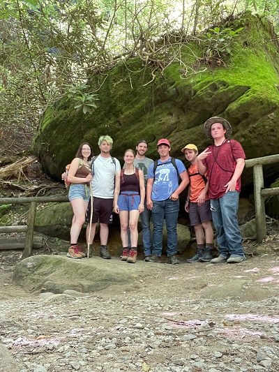
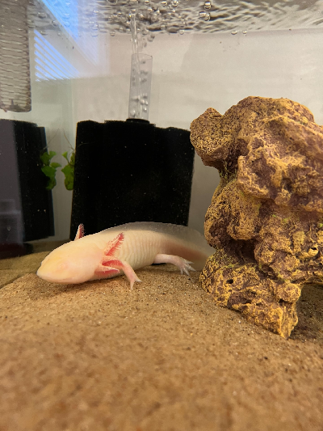

Jobs
Education
Dennis Linneman

This is a photo of my friends and I hiking, and camping in Red River Gorge Kentucky
My Timeline
- Born here in Cincinnati, Ohio on May 3rd 2000
- Attended Our Lady of Victory school from 2005 to 2014
- Attended Elder High School from 2014 to 2018
- Started working at Kroger in 2016 as a Pick Up associate
- Graduated from Elder Hhigh School in May 2018
- Attended Northern Kentucky University in 2018 studying History & Secondary Education, but put my studies on hold due to Covid-19
- Recieved a promotion In Kroger in 2020 working as a district store manager traveling to several stores in the city depending on who needed help
Fun facts about me
- I am a computer enthusiast who builds computers on the side for family & friends
- I am a gamer who enjoys playing a variety of different games
- I am a massive Star Wars fan who collects Star Wars Lego sets
- I am an owner of an axolotl named Iris

This is a photo of my axolotl Iris
Click here to view my LinnkedIn Account.
Test